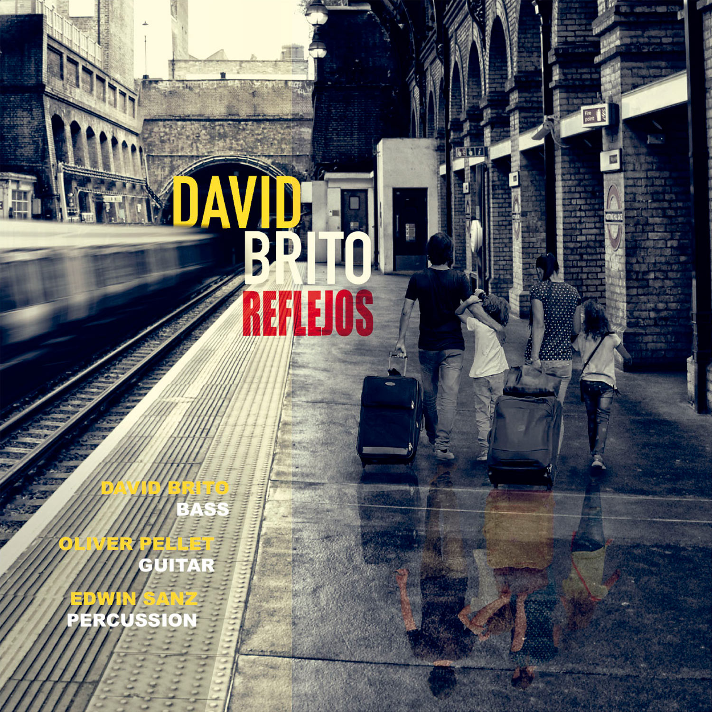
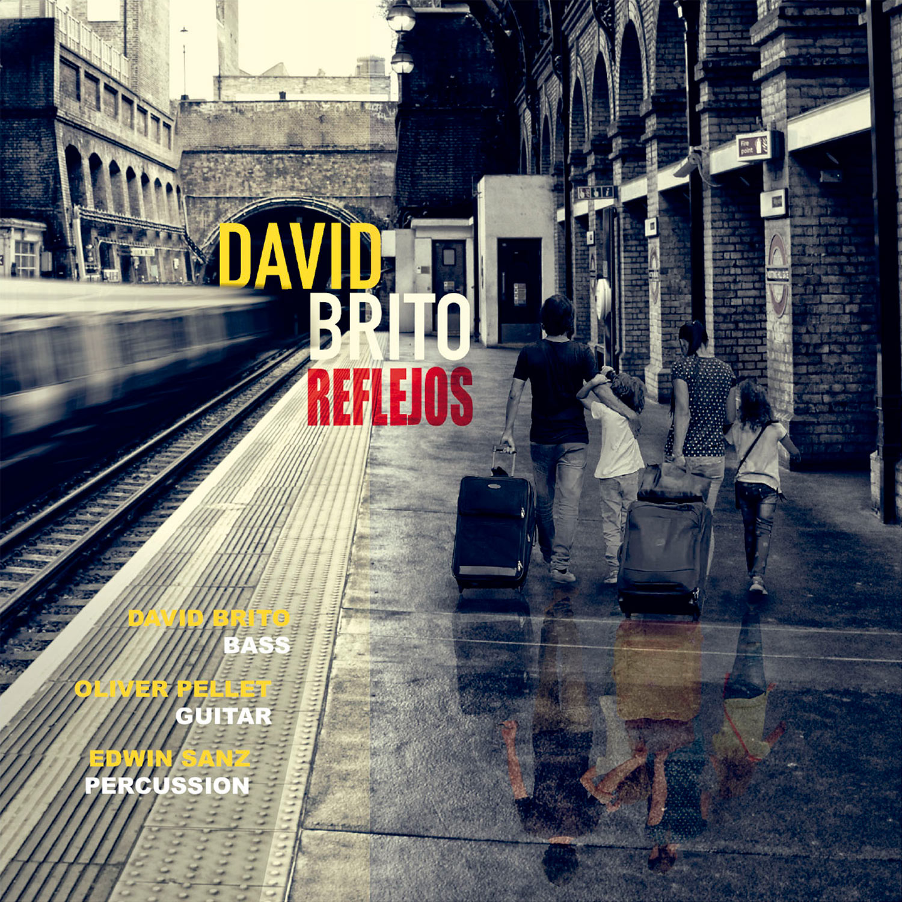

¡Hola!
Soy Ana, desarrolladora web full stack y diseñadora
gráfica.
Bienvenidos a mi portfolio.
SOBRE MI
Apasionada por la creación de webs dinámicas. Soy desarrolladora web junior con enfoque en JavaScript, Angular, React, Node y Express. Estoy en constante búsqueda de nuevos desafíos y oportunidades para crecer en el mundo del desarrollo web. Tengo habilidades en el desarrollo de aplicaciones web utilizando tecnologías como JavaScript, Angular, React, Node, Express, SQL, MongoDB, HTML5 y CSS3. Soy competente en el uso de frameworks modernos como Angular y React para la creación de interfaces de usuario robustas y escalables.
Apasionada por el aprendizaje continuo y la mejora constante, siempre busco estar al tanto de las últimas tendencias y mejores prácticas en el desarrollo web. Dispuesta a colaborar en equipos multidisciplinarios y contribuir con mis habilidades técnicas y creativas para alcanzar los objetivos del proyecto. ¡Conectemos y exploremos juntos nuevas oportunidades en el mundo del desarrollo web!
HABILIDADES TÉCNICAS
HABILIDADES PROFESIONALES
- Diseño Gráfico: Más de 20 años de experiencia en diseño gráfico con alta competencia en Adobe Photoshop, Illustrator e InDesign. Especializada en retoque y edición de imagen.
- Desarrollo Frontend: Experiencia en la creación de interfaces web utilizando HTML, CSS y JavaScript. Habilidad para fusionar diseño gráfico con desarrollo web para crear sitios visualmente atractivos y funcionales.
- Prototipado y Diseño UI/UX: Competente en el uso de Figma para el diseño de interfaces de usuario y la creación de prototipos interactivos.
- Desarrollo Full Stack: Experiencia en desarrollo web full stack utilizando tecnologías como Node.js, Express, React y Angular. Capacidad para desarrollar aplicaciones web completas, desde el frontend hasta el backend.
- Control de Versiones: Familiaridad con Git y GitHub para el control de versiones y la colaboración en proyectos de desarrollo.
- Atención al Detalle: Meticulosa en el trabajo de diseño y desarrollo, asegurando alta calidad y precisión en cada proyecto.
- Creatividad e Innovación: Capacidad para combinar habilidades de diseño gráfico y desarrollo web para crear soluciones innovadoras y visualmente impactantes.
- Gestión de Proyectos: Habilidad para planificar, ejecutar y supervisar proyectos de diseño y desarrollo, garantizando el cumplimiento de plazos y objetivos.
- Adaptabilidad y Aprendizaje Continuo: Capacidad para adaptarse rápidamente a nuevas tecnologías y tendencias en diseño y desarrollo web.
- Comunicación y Colaboración: Excelentes habilidades de comunicación escrita y verbal, facilitando la colaboración efectiva con equipos multidisciplinarios y clientes.
PROYECTOS

 


CONTACTO
Si estás buscando una desarrolladora web, diseñadora gráfica o retocadora fotográfica, contáctame a través de anamgdesign@gmail.com o completando el formulario en esta página. Estoy disponible para discutir tu proyecto y ayudarte a hacerlo realidad. También estoy abierta a nuevas oportunidades de empleo y colaboraciones. ¡Espero trabajar contigo pronto!